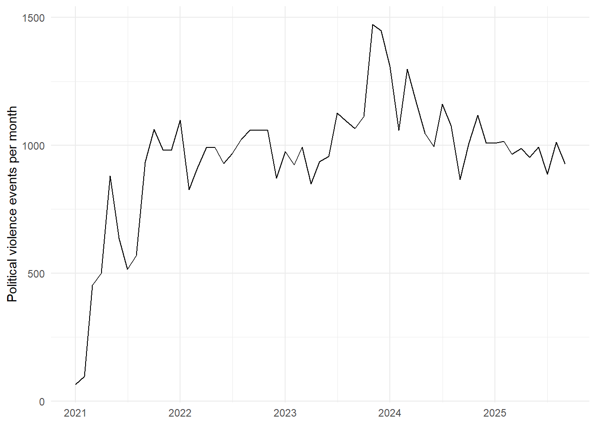
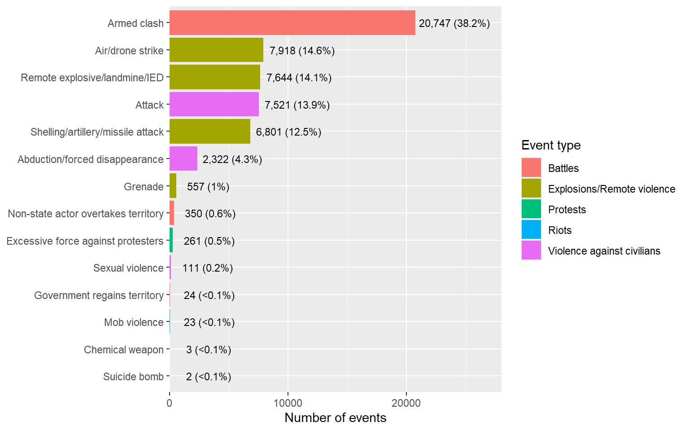
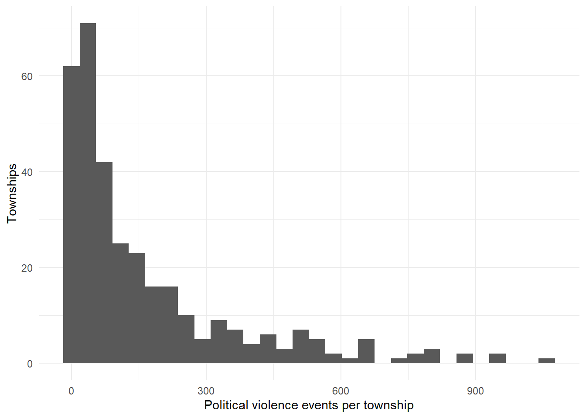
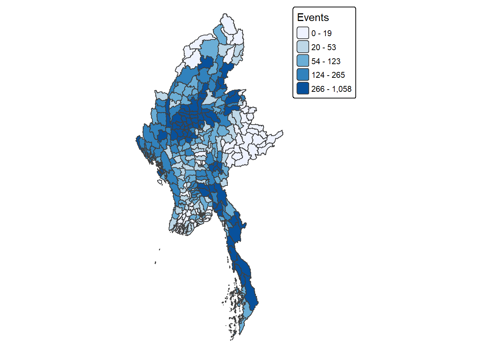
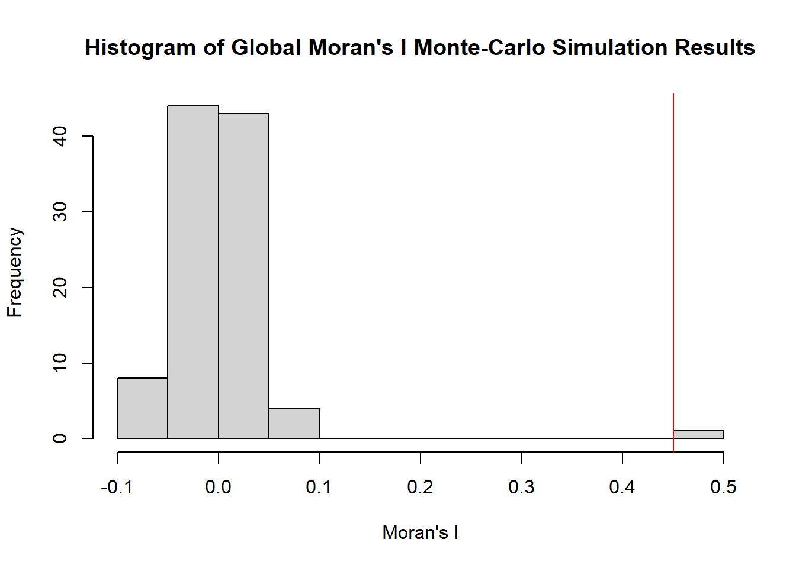
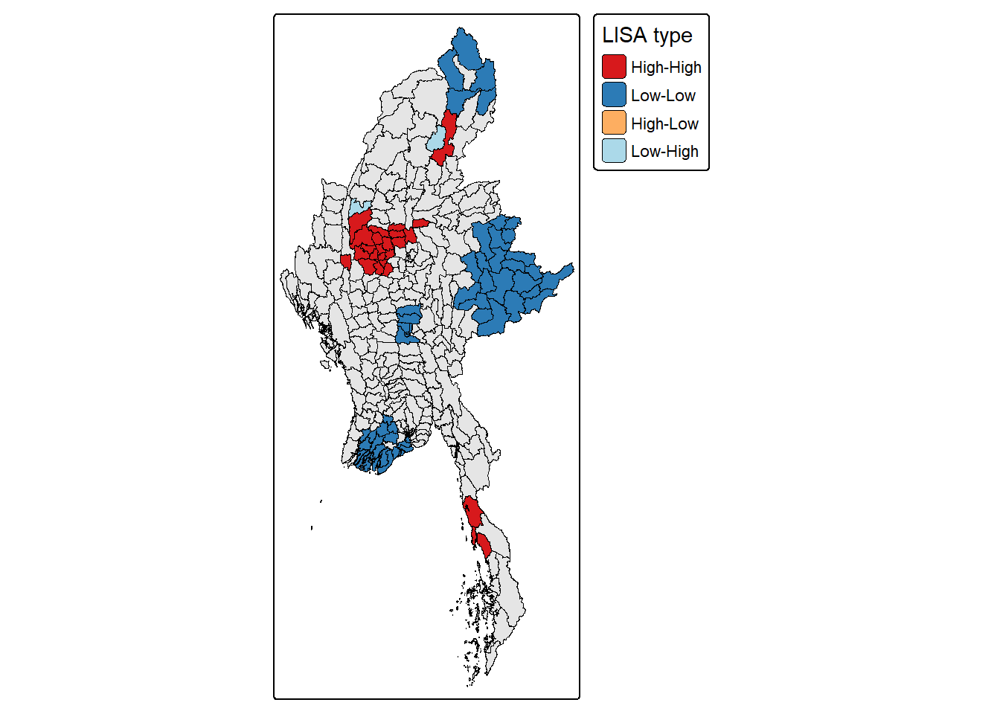
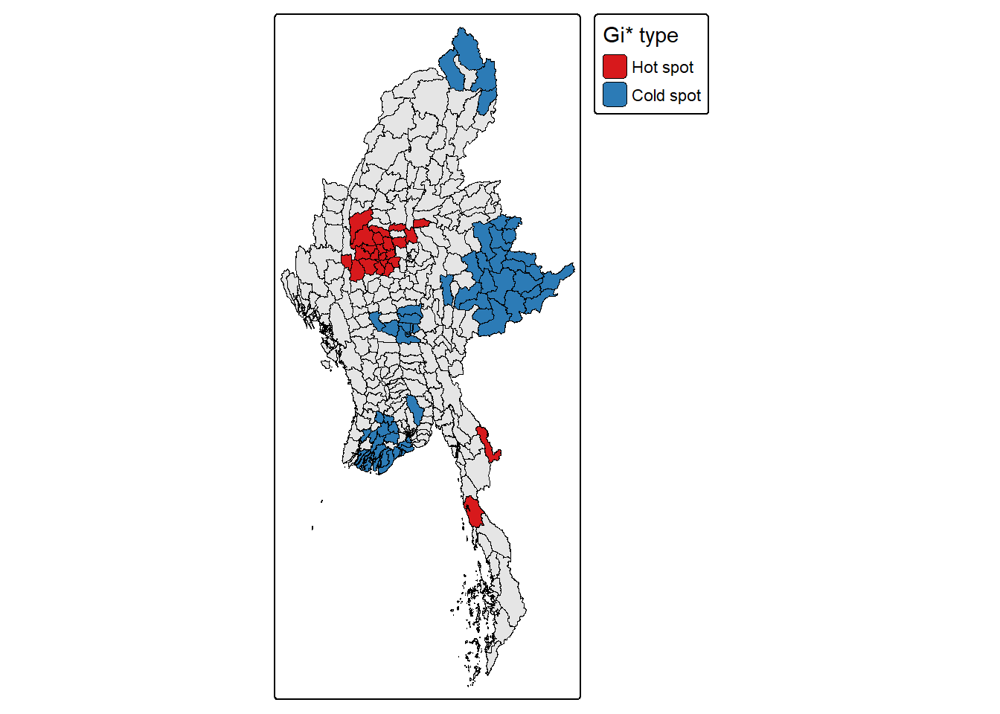

pacman::p_load(tidyverse, sf, sfdep, spdep, tmap, Kendall)Take-home Exercise 2: Geospatial Analytics for Peace
Local Measures of Spatial Association and Emerging Hot Spot Analysis of Armed Conflict in Myanmar
1 Introduction
1.1 Study Context
Armed conflict in Myanmar dates back to independence in 1948. It has largely been fought between ethnic armed organisations and the national armed forces, the Tatmadaw, over self-determination and the federalisation of the country. Ceasefires and the self-administered zones created in 2008 did not end these demands, and the conflict is often described as the longest ongoing civil war in the world.
In February 2021, the military seized power from the government elected in 2020, which was led by the National League for Democracy. Repression of protests, marked by arbitrary arrests and indiscriminate violence, intensified the conflict rather than ending it. Many civilians fled to forests and mountainous areas, others joined armed resistance, and large areas slipped almost entirely out of the junta’s control. Violence since 2021 has therefore been uneven across the country, which makes the question of where it concentrates, and how that is changing, a spatial one.
1.2 Purpose and Objectives
This exercise analyses armed conflict in Myanmar, measured through political violence, at the township level from 1 January 2021 to 30 September 2025. The data is drawn from two sources: event data from the Armed Conflict Location & Event Data Project (ACLED) and township boundaries from the Myanmar Information Management Unit (MIMU).
The analysis applies two spatial methods:
- Local Measures of Spatial Association (LMSA), which identify townships where violence is unusually high or low compared with neighbouring townships.
- Emerging Hot Spot Analysis (EHSA), which tracks how hot spots and cold spots form, persist or fade over time.
In this study, political violence is defined following ACLED as “the use of force by a group with a political purpose or motivation, or with distinct political effects” (ACLED, n.d.). The exact scope of included events is set out in the Data and Study Design section.
The objectives are:
- To pinpoint exact geographic hot spots, cold spots and spatial outliers where violence clusters or behaves unusually compared with surrounding townships.
- To reveal where, how fast and in what pattern political violence is evolving over space and time.
1.3 Research Questions
- Is political violence spatially clustered across Myanmar’s townships, or is it distributed randomly?
- Which townships are statistically significant hot spots, cold spots or spatial outliers?
- Where is political violence intensifying, persisting or fading, how fast it is happening, and in what pattern?
- What do these patterns imply for peace-building and conflict prevention?
2 Overview of Analytical Methods
2.1 Spatial Autocorrelation
Spatial autocorrelation is the degree to which values at nearby locations resemble one another. It follows from Tobler’s (1970) first law of geography, which states that near things are more related than distant things. Similar values close together give positive spatial autocorrelation, while contrasting values close together give negative spatial autocorrelation. Measures of spatial autocorrelation are grouped by the scale at which they operate.
Global indicators summarise the whole study area in a single value. Moran’s I (Moran, 1950) tests whether the pattern of values across townships differs from a random arrangement. It shows whether spatial dependence exists, but not where it is concentrated, so it is used first as a check on whether a local analysis is justified.
Local indicators give one result for each location. Local Moran’s I, a local indicator of spatial association (LISA), compares each township with its neighbours and labels it as part of a high-high or low-low cluster, or as a spatial outlier (Anselin, 1995). The Getis-Ord Gi* statistic (Getis & Ord, 1992; Ord & Getis, 1995) measures how strongly high or low values are concentrated in a township together with its neighbours, which identifies hot spots and cold spots. Both measures depend on how neighbours are defined through spatial weights, and significance is assessed by permutation.
2.2 Emerging Hot Spot Analysis
Measures of spatial autocorrelation describe only a single snapshot in time. Emerging Hot Spot Analysis (EHSA) adds time by combining Gi* with a trend test (Esri, n.d.). Events are first aggregated into a space-time cube of townships by time bins. Gi* is then computed for each time bin, and the Mann-Kendall test (Kendall, 1975; Mann, 1945) checks whether each township’s series of Gi* values is rising or falling. By evaluating a township’s hot or cold spot history alongside this trend, the analysis categorises it into a specific temporal pattern, such as new, consecutive, persistent, intensifying, diminishing, sporadic or oscillating.
3 Data and Study Design
3.1 The Data
| Dataset | Description | Format | Source |
|---|---|---|---|
| ACLED Myanmar Event Data (January 2021 to September 2025) | Event-level records of political violence, protests and strategic developments, with date, location, event classification and fatality fields. | CSV | ACLED |
| Myanmar Township Boundaries (MIMU v9.4) | Township-level administrative boundaries for Myanmar, with state, district and township names and codes. | Shapefile | MIMU |
3.2 Study Area and Period
The study area is Myanmar, and the unit of analysis is the township. The study period runs from 1 January 2021 to 30 September 2025.
3.3 Scope of Political Violence
In this study, the scope of armed conflict is determined by the disorder type that ACLED assigns to each event. ACLED groups events under three primary disorder types: “Political violence”, “Demonstrations” and “Strategic developments”. Notably, one sub-event type (“excessive force against protesters”) carries two labels - “Political violence; Demonstrations” (ACLED, n.d.). For this analysis, all events labelled “Political violence” (including those with the dual label) are retained. This ensures alignment with the objectives of the study, and using ACLED’s predefined classification for this filtering provides a documented, reproducible methodology.
| ACLED Disorder Type | Event Types (Sub-event Types) | Events | Inclusion Status |
|---|---|---|---|
| Political violence | Battles; Explosions/Remote violence; Violence against civilians; Riots (mob violence) | 54,028 | Included |
| Political violence; Demonstrations | Protests (excessive force against protesters) | 261 | Included |
| Demonstrations | Protests (peaceful protest, protest with intervention); Riots (violent demonstration) | 14,987 | Excluded |
| Strategic developments | Strategic developments (for e.g., agreement, arrests, changes to group activity, etc.) | 17,833 | Excluded |
4 Setup
4.1 Installing and Loading the R Packages
The following R packages are used:
| Package | Purpose | Use Case in this Exercise |
|---|---|---|
| tidyverse | Collection of packages for data import, manipulation and visualisation | Importing the ACLED data, wrangling and aggregating events, and producing the exploratory charts |
| sf | Imports, manages and processes vector-based geospatial data | Importing the township boundaries, converting event coordinates to spatial points, and joining events to townships |
| sfdep | Spatial dependence analysis within a tidy workflow | Building the spatial weights and the space-time cube, computing Local Moran’s I and Gi*, and running Emerging Hot Spot Analysis |
| spdep | Spatial weights and statistics for spatial dependence | Global Moran’s I tests and the spatial correlogram |
| tmap | Thematic map creation using a layered grammar of graphics | Mapping event patterns, clusters and EHSA classes |
| Kendall | Mann-Kendall trend test | Testing the trend in each township’s Gi* series in Emerging Hot Spot Analysis |
4.2 Reproducibility
A fixed seed value of 123 is set for reproducibility of any simulation-based procedure used later in this study.
set.seed(123)5 Data Preparation and Quality Assessment
5.1 Importing the Data
5.1.1 Myanmar Township Boundaries
The township boundary shapefile is imported with st_read() of sf:
mmr <- st_read(dsn = "data/geospatial",
layer = "mmr_polbnda_adm3_250k_mimu_1")Reading layer `mmr_polbnda_adm3_250k_mimu_1' from data source
`C:\yxlinn\ISSS626-GAA\Take-home_Ex\Take-home_Ex02\data\geospatial'
using driver `ESRI Shapefile'
Simple feature collection with 330 features and 8 fields
Geometry type: MULTIPOLYGON
Dimension: XY
Bounding box: xmin: 92.1721 ymin: 9.605884 xmax: 101.17 ymax: 28.54554
Geodetic CRS: WGS 84glimpse(mmr)Rows: 330
Columns: 9
$ ST <chr> "Ayeyarwady", "Ayeyarwady", "Ayeyarwady", "Ayeyarwady", "Ayey…
$ ST_PCODE <chr> "MMR017", "MMR017", "MMR017", "MMR017", "MMR017", "MMR017", "…
$ DT <chr> "Hinthada", "Hinthada", "Hinthada", "Hinthada", "Hinthada", "…
$ DT_PCODE <chr> "MMR017D002", "MMR017D002", "MMR017D002", "MMR017D002", "MMR0…
$ TS <chr> "Hinthada", "Ingapu", "Kyangin", "Lemyethna", "Myanaung", "Za…
$ TS_PCODE <chr> "MMR017008", "MMR017013", "MMR017012", "MMR017010", "MMR01701…
$ TS_MMR <chr> "ဟင်္သာတ", "အင်္ဂပူ", "ကြံခင်း", "လေးမျက်နှာ", "မြန်အောင်", "ဇလွန်", "လပွတ္တာ", "…
$ PCode_V <dbl> 9.4, 9.4, 9.4, 9.4, 9.4, 9.4, 9.4, 9.4, 9.4, 9.4, 9.4, 9.4, 9…
$ geometry <MULTIPOLYGON [°]> MULTIPOLYGON (((95.21313 17..., MULTIPOLYGON (((…The following code chunk checks whether the township code is a unique key and whether all geometries are valid.
mmr %>%
st_drop_geometry() %>%
summarise(townships = n(),
unique_codes = n_distinct(TS_PCODE),
unique_names = n_distinct(TS)) townships unique_codes unique_names
1 330 330 328sum(!st_is_valid(mmr))[1] 0
NoteAnalysis
All 330 township codes are unique, but only 328 township names are. In addition, all geometries were checked and found to be valid.
The shared names are listed below:
mmr %>%
st_drop_geometry() %>%
group_by(TS) %>%
filter(n() > 1) %>%
ungroup() %>%
select(TS, TS_PCODE, DT, ST) %>%
arrange(TS)# A tibble: 4 × 4
TS TS_PCODE DT ST
<chr> <chr> <chr> <chr>
1 Htantabin MMR007014 Taungoo Bago (East)
2 Htantabin MMR013006 Yangon (North) Yangon
3 Minhla MMR008009 Thayarwady Bago (West)
4 Minhla MMR009013 Thayet Magway
NoteAnalysis
The names Htantabin and Minhla each refer to two different townships located in separate districts and states.
Hence, TS_PCODE is used as the unique join key throughout, with township names reserved only for labels.
5.1.2 ACLED Event Data
The event file is imported with read_csv() of readr:
acled <- read_csv("data/aspatial/ACLED_Data_Myanmar_Jan2021-Sep2025.csv")The following code chunk summarises the basic dimensions and data integrity checks for the imported ACLED dataset.
tibble(
check = c("Events", "Variables", "First event date",
"Last event date", "Duplicated event IDs",
"Missing coordinates"),
result = c(nrow(acled), ncol(acled),
as.character(min(acled$event_date)),
as.character(max(acled$event_date)),
sum(duplicated(acled$event_id_cnty)),
sum(is.na(acled$latitude) | is.na(acled$longitude)))
)# A tibble: 6 × 2
check result
<chr> <chr>
1 Events 87109
2 Variables 31
3 First event date 2021-01-01
4 Last event date 2025-09-30
5 Duplicated event IDs 0
6 Missing coordinates 0
NoteAnalysis
The file contains 87,109 events and 31 variables. The first and last event dates (1 January 2021 and 30 September 2025) match the study period, and there are no duplicated event identifiers or missing coordinates.
5.2 Spatial Join of Events to Townships
Events are assigned to townships by their coordinates. The event table is first converted to point features with st_as_sf(). Then, each point is matched to the township polygon that contains it with st_join(), using st_within as the join predicate. Only the township code is retained.
acled_sf <- acled %>%
st_as_sf(coords = c("longitude", "latitude"), crs = 4326, remove = FALSE)
acled_join <- st_join(acled_sf, mmr["TS_PCODE"], join = st_within)The row counts before and after the join are compared to ensure that no events were lost or duplicated.
c(before_join = nrow(acled_sf),
after_join = nrow(acled_join),
duplicated_ids = sum(duplicated(acled_join$event_id_cnty,)),
unmatched = sum(is.na(acled_join$TS_PCODE))) before_join after_join duplicated_ids unmatched
87109 87109 0 15 All 87,109 events are retained and none is duplicated. However, 15 events fall in no township polygon. The distance from each of them to the nearest township is measured:
unmatched <- which(is.na(acled_join$TS_PCODE))
nearest <- st_nearest_feature(acled_join[unmatched, ], mmr)
dist_km <- as.numeric(st_distance(acled_join[unmatched, ],
mmr[nearest, ],
by_element = TRUE)) / 1000
acled_join[unmatched, ] %>%
st_drop_geometry() %>%
mutate(distance_km = dist_km,
admin3_agrees = admin3 == mmr$TS[nearest]) %>%
group_by(country) %>%
summarise(events = n(),
admin3_agrees = sum(admin3_agrees, na.rm = TRUE),
max_km = round(max(distance_km), 2))# A tibble: 2 × 4
country events admin3_agrees max_km
<chr> <int> <int> <dbl>
1 Indian Ocean 6 0 642.
2 Myanmar 9 9 0.64
NoteAnalysis
The 15 unmatched events fall into two groups. Nine are coded to Myanmar and lie within 0.64 km of a township boundary, so they are most likely points that sit near to a township edge. The township named in admin3 (ACLED’s third administrative level) matches the nearest township in all nine cases. These events are therefore assigned to their nearest township.
The remaining six events are coded to the Indian Ocean and lie approximately 642 km from the nearest township. None of these records have a matching admin3, providing no basis for placing them in a township. These events are therefore excluded.
The adjustments to the 15 unmatched events are applied below:
snap <- acled_join$country[unmatched] == "Myanmar"
acled_join$TS_PCODE[unmatched[snap]] <- mmr$TS_PCODE[nearest[snap]]
acled_join <- acled_join %>%
filter(!is.na(TS_PCODE))
nrow(acled_join)[1] 87103After the adjustments, 87,103 events remain, each linked to exactly one township.
5.3 Data Quality Assessment
The township-linked events are assessed for locational reliability and coverage before the space-time cube is built.
5.3.1 Cross-Validation of Township Assignments
ACLED records the township name of each event in admin3. This name is compared with the MIMU township that each event falls in.
acled_join %>%
st_drop_geometry() %>%
left_join(mmr %>% st_drop_geometry() %>% select(TS_PCODE, TS),
by = "TS_PCODE") %>%
summarise(blank_admin3 = sum(is.na(admin3) | admin3 == ""),
compared = sum(!is.na(admin3) & admin3 != ""),
agreement_pct = round(mean(admin3 == TS, na.rm = TRUE) * 100, 1))# A tibble: 1 × 3
blank_admin3 compared agreement_pct
<int> <int> <dbl>
1 1112 85991 98.9
NoteAnalysis
admin3 is blank for 1,112 events, which are excluded from the comparison. Among the remaining 85,991 events, the recorded township matches the MIMU township for 98.9%. The high agreement rate validates the approach of assigning events to townships based on their coordinates.
5.3.2 Geographic Precision
ACLED’s geo_precision records how exactly an event is located:
acled_join %>%
st_drop_geometry() %>%
left_join(mmr %>% st_drop_geometry() %>% select(TS_PCODE, TS),
by = "TS_PCODE") %>%
group_by(geo_precision) %>%
summarise(n = n(),
pct = round(n / nrow(acled_join) * 100, 1),
compared = sum(!is.na(admin3) & admin3 != ""),
agreement_pct = round(mean(admin3 == TS, na.rm = TRUE) * 100, 1))# A tibble: 3 × 5
geo_precision n pct compared agreement_pct
<dbl> <int> <dbl> <int> <dbl>
1 1 49261 56.6 48411 98.1
2 2 37460 43 37342 100
3 3 382 0.4 238 99.2
NoteAnalysis
Based on the output, approximately 56.6% of events are located at an exact site (level 1), 43.0% at a nearby location (level 2), and 0.4% within a broader area (level 3). The recorded township name agrees with the assigned township for at least 98% of compared events at every level, indicating that lower precision does not weaken the township assignment. Therefore, events of all precision levels are retained.
5.3.3 Political Violence Coverage
Political violence is the conflict variable analysed, and its coverage across townships is checked.
pv <- acled_join %>%
st_drop_geometry() %>%
filter(grepl("Political violence", disorder_type))
nrow(pv)[1] 54284mmr %>%
st_drop_geometry() %>%
left_join(count(pv, TS_PCODE, name = "events"), by = "TS_PCODE") %>%
summarise(townships = n(),
with_events = sum(!is.na(events)),
without_events = sum(is.na(events))) townships with_events without_events
1 330 322 8
NoteAnalysis
Following the spatial join, a total of 54,284 events meet the definition of political violence, forming the final sample size for this analysis. Across Myanmar’s 330 townships, 322 recorded at least one event, while the remaining eight recorded none.
5.3.4 Temporal Coverage
The monthly number of political violence events is checked for gaps across the study period, since every time slice of the space-time cube requires data.
pv_month <- pv %>%
mutate(month = floor_date(event_date, "month")) %>%
count(month, name = "events") %>%
complete(month = seq(as.Date("2021-01-01"),
as.Date("2025-09-01"),
by = "month"),
fill = list(events = 0))
pv_month %>%
summarise(months = n(),
empty_months = sum(events == 0),
min = min(events),
median = median(events),
max = max(events))# A tibble: 1 × 5
months empty_months min median max
<int> <int> <int> <int> <int>
1 57 0 65 993 1473The monthly series is plotted:
ggplot(pv_month, aes(x = month, y = events)) +
geom_line() +
labs(x = NULL, y = "Political violence events per month") +
theme_minimal()
NoteAnalysis
All 57 months record at least one event, confirming there are no temporal gaps in the data set. Monthly counts start at 65 in January 2021, rise sharply through the year to approximately 1,000, and stabilise around that level throughout 2022. In November 2023, the monthly count reaches its highest point at 1,473 events, after which it returns to approximately 1,000 per month by 2025. The median monthly count of political violence events is 993.
5.4 Building the Space-Time Cube
A space-time cube holds one value for every township in every time slice. The cube is built from political violence events counted by township and month.
5.4.1 Selecting the Time Bin
The time bin sets the temporal resolution of the space-time cube. To decide between a monthly or quarterly approach, the two methods are compared across the entire study period based on the number of resulting time slices and the sparsity of the data.
compare_bins <- function(bin_unit, last_start) {
pv %>%
mutate(period = floor_date(event_date, bin_unit)) %>%
count(TS_PCODE, period, name = "events") %>%
complete(TS_PCODE = mmr$TS_PCODE,
period = seq(as.Date("2021-01-01"),
as.Date(last_start),
by = bin_unit),
fill = list(events = 0)) %>%
summarise(bin = bin_unit,
slices = n_distinct(period),
rows = n(),
zero_cells_pct = round(mean(events == 0) * 100, 1),
mean_events = round(mean(events), 1))
}
bind_rows(compare_bins("month", "2025-09-01"),
compare_bins("quarter", "2025-07-01"))# A tibble: 2 × 5
bin slices rows zero_cells_pct mean_events
<chr> <int> <int> <dbl> <dbl>
1 month 57 18810 50.3 2.9
2 quarter 19 6270 30.7 8.7
NoteAnalysis
The output shows that monthly bins give 57 time slices, but 50.3% of township-months record no events, with an average of 2.9 events per cell. Quarterly bins give 19 time slices, with 30.7% of township-quarters remaining empty and an average of 8.7 events per cell.
Despite the sparser counts, monthly bins are selected for this analysis. They give each township a longer series for the Mann-Kendall test, and they allow changes in spatial patterns to be located to the month, which is essential for answering how fast political violence is evolving.
5.4.2 Aggregating Events to Township-Months
Events are aggregated by township and month. A space-time cube requires a value for every township in every month, so any township-month combination without recorded events is added to the table with a count of zero.
pv_tm <- pv %>%
mutate(month = floor_date(event_date, "month")) %>%
count(TS_PCODE, month, name = "events") %>%
complete(TS_PCODE = mmr$TS_PCODE,
month = seq(as.Date("2021-01-01"),
as.Date("2025-09-01"),
by = "month"),
fill = list(events = 0))The completed table is checked for its size and the total number of events:
pv_tm %>%
summarise(rows = n(),
total_events = sum(events))# A tibble: 1 × 2
rows total_events
<int> <int>
1 18810 54284
NoteAnalysis
The completed table has 18,810 rows (330 townships by 57 months) and a total of 54,284 events. This exactly matches the baseline count computed under the Political Violence Coverage subsection.
5.4.3 Creating the Time Series Cube
The space-time cube is created with spacetime() of sfdep, which combines the aggregated event table with the township boundaries. TS_PCODE serves as the location identifier and month as the time column.
pv_st <- spacetime(pv_tm,
mmr %>%
st_transform(32647) %>%
select(TS_PCODE, TS, ST) %>%
arrange(TS_PCODE),
.loc_col = "TS_PCODE",
.time_col = "month")Next, is_spacetime_cube() verifies that the object is a valid cube:
is_spacetime_cube(pv_st)[1] TRUE
NoteAnalysis
The output is TRUE, confirming that every township has a value in every month. Hence, the cube is complete.
6 Exploratory Data Analysis (EDA)
6.1 Composition of Political Violence Events
Political violence comprises several event types. The chart shows the number and share of events by type:
pv %>%
count(event_type, sub_event_type) %>%
mutate(pct = 100 * n / sum(n),
label = paste0(format(n, big.mark = ","), " (",
ifelse(pct < 0.1, "<0.1", round(pct, 1)), "%)")) %>%
ggplot(aes(x = n, y = reorder(sub_event_type, n),
fill = event_type)) +
geom_col() +
geom_text(aes(label = label), hjust = -0.05, size = 3) +
scale_x_continuous(expand = expansion(mult = c(0, 0.35))) +
labs(x = "Number of events", y = NULL, fill = "Event type")
NoteAnalysis
Political violence is highly distributed, with no single sub-event type accounting for a majority of incidents. Armed clashes are the most frequent (38.2%), followed by air/drone strikes (14.6%), remote explosives/IEDs (14.1%), attacks on civilians (13.9%), and shelling/artillery (12.5%). Other event types, such as excessive force against protesters (261 events) and mob violence (23 events), make up a small fraction of the total data.
6.2 Political Violence Events by Township
The total number of political violence events per township, from 1 January 2021 to 30 September 2025, is obtained by summing the monthly counts.
mmr_events <- mmr %>%
left_join(pv_tm %>%
group_by(TS_PCODE) %>%
summarise(events = sum(events)),
by = "TS_PCODE")The distribution of the counts is summarised below:
mmr_events %>%
st_drop_geometry() %>%
summarise(min = min(events),
q1 = quantile(events, 0.25),
median = median(events),
mean = round(mean(events), 1),
q3 = quantile(events, 0.75),
max = max(events)) min q1 median mean q3 max
1 0 24 80.5 164.5 214.75 1058ggplot(mmr_events, aes(x = events)) +
geom_histogram(bins = 30) +
labs(x = "Political violence events per township", y = "Townships") +
theme_minimal()
NoteAnalysis
The summary statistics and histogram reveal that the distribution of political violence across townships is heavily right-skewed. While the median township experienced 80.5 events, the mean is significantly higher at 164.5, with the maximum reaching 1,058 events. This indicates that political violence in Myanmar is not uniformly distributed and requires the use of spatial cluster analysis to pinpoint where those intense concentrations occur.
6.3 Spatial Distribution of Events
The total number of political violence events per township is mapped to show where events are concentrated.
tm_shape(mmr_events) +
tm_polygons(fill = "events",
fill.scale = tm_scale_intervals(style = "quantile",
n = 5,
values = "brewer.blues"),
fill.legend = tm_legend(title = "Events")) +
tm_layout(frame = FALSE)
NoteAnalysis
The highest class (266 to 1,058 events) is concentrated in the central part of the country and along the southern strip, while the lowest two classes (0 to 53 events) are mostly in the north and east. High-count townships often sit next to each other, which suggests spatial clustering. However, this visual impression needs to be validated using local spatial statistics. The classes are quantiles, so each holds about the same number of townships, and the class ranges widen sharply towards the top.
7 Global Measures of Spatial Autocorrelation
This section evaluates whether political violence events exhibit spatial dependence across townships, meaning that townships with similar event counts tend to be located near each other. Global Moran’s I measures the degree of this spatial autocorrelation for the country as a whole, before the local patterns are examined.
7.1 Spatial Weights
Spatial weights define which townships are neighbours and how strongly they influence each other.
7.1.1 Coordinate Reference System
The township boundaries are projected from WGS 84 to UTM zone 47N (EPSG: 32647), which covers central Myanmar. This converts the coordinate system so that distances are calculated in metres rather than degrees.
mmr_utm <- st_transform(mmr_events, crs = 32647)7.1.2 Choice of Neighbours
Neighbours can be defined in three main ways:
- Contiguity: Defines neighbours as townships that share a boundary (Rook), a corner (Bishop) or either (Queen).
- Distance band: Defines neighbours as all townships within a fixed distance.
- K-nearest neighbours (KNN): Defines the neighbours of a township as its k closest townships, based on the distance between township points.
To determine the most appropriate neighbour structure for this study, the distributions generated by the three definitions are evaluated below:
nb_q <- st_contiguity(mmr_utm$geometry)
nb_dist <- st_dist_band(mmr_utm$geometry)
nb_knn5 <- st_knn(mmr_utm$geometry, k = 5)
bind_rows(tibble(neighbours = "Queen contiguity", n = spdep::card(nb_q)),
tibble(neighbours = "Distance band", n = spdep::card(nb_dist)),
tibble(neighbours = "KNN", n = spdep::card(nb_knn5))) %>%
group_by(neighbours) %>%
summarise(min = min(n), median = median(n), max = max(n),
no_neighbours = sum(n == 0))# A tibble: 3 × 5
neighbours min median max no_neighbours
<chr> <int> <dbl> <int> <int>
1 Distance band 1 60.5 104 0
2 KNN 5 5 5 0
3 Queen contiguity 0 5 11 3
NoteAnalysis
Based on the results, Queen contiguity leaves three townships entirely without any neighbours, while a fixed distance band creates extreme variance ranging from 1 to 104 neighbours. KNN gives every township exactly 5 neighbours.
For this study, KNN is used because it ensures every township has neighbours by construction, allowing direct control over the neighbour count. In contrast, contiguity relies on shared borders, which can leave isolated townships without any neighbours. A fixed distance band is also not ideal as township sizes across Myanmar differ and a single distance band generates widely varying neighbour counts.
The value k = 5 is chosen because it matches the median number of Queen contiguity neighbours. A relatively small k also keeps the neighbourhood local, since a larger k includes more distant townships and dilutes local patterns.
7.1.3 Choice of Weights
Weights can be assigned in several ways:
- Binary: Neighbours receive a weight of 1 and all other townships a weight of 0.
- Row-standardised: The weights of each township are scaled to sum to 1, so each neighbour receives a weight of 1 divided by the number of neighbours.
- Distance decay: Closer neighbours receive larger weights, using the inverse of the distance or a kernel function.
Row-standardised weights (style = "W") are used for Moran’s I because they convert the spatial lag into an average of the neighbours’ values, allowing for a direct comparison with the township’s own event count.
The weights are built on the KNN neighbours:
wm_knn <- mmr_utm %>%
mutate(nb = st_knn(geometry, k = 5),
wt = st_weights(nb, style = "W"),
.before = 1)
wm_knn$wt[[1]][1] 0.2 0.2 0.2 0.2 0.2With five neighbours per township, each neighbour receives a weight of 0.2.
7.2 Global Moran’s I
Global Moran’s I assesses the spatial dependence of political violence events across townships, analysing the total event counts on their original scale. If the events are randomly distributed across townships, Moran’s I will indicate no significant spatial autocorrelation.
The test evaluates the following hypotheses:
- Null hypothesis (H0): Political violence events are randomly distributed across townships.
- Alternative hypothesis (H1): There is spatial autocorrelation, indicating that townships with similar event counts are clustered (positive) or dispersed (negative).
The test is conducted at the 5% significance level (p < 0.05).
7.2.1 Global Moran’s I Test and Permutation Test
global_moran_test(wm_knn$events,
wm_knn$nb,
wm_knn$wt,
alternative = "two.sided")
Moran I test under randomisation
data: x
weights: listw
Moran I statistic standard deviate = 14.075, p-value < 2.2e-16
alternative hypothesis: two.sided
sample estimates:
Moran I statistic Expectation Variance
0.450283002 -0.003039514 0.001037323 gmoran <- global_moran_perm(wm_knn$events,
wm_knn$nb,
wm_knn$wt,
alternative = "two.sided",
nsim = 99)
gmoran
Monte-Carlo simulation of Moran I
data: x
weights: listw
number of simulations + 1: 100
statistic = 0.45028, observed rank = 100, p-value < 2.2e-16
alternative hypothesis: two.sided
NoteAnalysis
From the outputs above, the following statistical inferences are drawn:
- Moran’s I statistic: 0.450 (Expectation: -0.003)
- Standard deviate: 14.075
- p-value (Moran’s I test): < 2.2e-16
- p-value (Monte Carlo Permutation test): < 2.2e-16
- Permutation test rank: 100 out of 100
The Global Moran’s I statistic of 0.450 sits well above its expectation, indicating positive spatial autocorrelation. Both the Moran’s I test and the Monte Carlo permutation test return low p-values (p < 0.05). Hence, the null hypothesis is rejected at the 5% significance level, providing strong evidence that townships with similar political violence event counts tend to be located near each other. However, as the global statistic does not identify where the clusters are located, it will need to be examined using local measures.
7.2.2 Visualising Monte Carlo Simulation of Global Moran’s I
The simulated Moran’s I values from the permutation test are plotted as a histogram, with the observed statistic marked by a red line.
hist(gmoran$res,
main = "Histogram of Global Moran's I Monte-Carlo Simulation Results",
xlab = "Moran's I", ylab = "Frequency")
abline(v = gmoran$statistic, col = "red")
8 Local Measures of Spatial Association
The global statistic shows that clustering exists, but it does not identify where these clusters are located. Local measures are calculated for each township, which allows clusters to be mapped.
Two measures are applied: - Local Moran’s I: Identifies clusters and outliers of similar or dissimilar event counts - Local Gi*: Identifies hot spots and cold spots
8.1 Local Moran’s I
Local Moran’s I is a Local Indicator of Spatial Association (LISA). It compares the event count of each township with the weighted average of its neighbours’ counts. Townships with a significant result are classified into one of four LISA types:
- High-High: a township with a high count surrounded by townships with high counts (cluster)
- Low-Low: a township with a low count surrounded by townships with low counts (cluster)
- High-Low: a township with a high count surrounded by townships with low counts (outlier)
- Low-High: a township with a low count surrounded by townships with high counts (outlier)
lisa <- wm_knn %>%
mutate(local_moran = local_moran(events, nb, wt, nsim = 99),
.before = 1) %>%
unnest(local_moran)
lisaSimple feature collection with 330 features and 23 fields
Geometry type: MULTIPOLYGON
Dimension: XY
Bounding box: xmin: -210008.6 ymin: 1062007 xmax: 724647.6 ymax: 3158467
Projected CRS: WGS 84 / UTM zone 47N
# A tibble: 330 × 24
ii eii var_ii z_ii p_ii p_ii_sim p_folded_sim skewness kurtosis
<dbl> <dbl> <dbl> <dbl> <dbl> <dbl> <dbl> <dbl> <dbl>
1 0.371 0.0338 0.0771 1.21 0.225 0.22 0.11 -0.598 -0.384
2 0.284 -0.0114 0.0812 1.04 0.299 0.26 0.13 -0.805 0.0199
3 0.323 -0.0231 0.0897 1.16 0.248 0.2 0.1 -0.705 0.128
4 0.132 -0.0194 0.0241 0.977 0.329 0.3 0.15 -1.03 0.795
5 0.435 0.0181 0.0963 1.34 0.179 0.1 0.05 -0.809 0.477
6 0.487 0.00466 0.0866 1.64 0.101 0.08 0.04 -0.478 -0.124
7 0.543 0.0186 0.118 1.53 0.127 0.02 0.01 -0.742 -0.0172
8 0.496 -0.0364 0.103 1.65 0.0982 0.02 0.01 -0.575 -0.467
9 0.555 0.0488 0.1000 1.60 0.109 0.02 0.01 -0.965 1.05
10 0.380 0.0478 0.0449 1.57 0.117 0.04 0.02 -0.747 0.112
# ℹ 320 more rows
# ℹ 15 more variables: mean <fct>, median <fct>, pysal <fct>, nb <nb>,
# wt <list>, ST <chr>, ST_PCODE <chr>, DT <chr>, DT_PCODE <chr>, TS <chr>,
# TS_PCODE <chr>, TS_MMR <chr>, PCode_V <dbl>, events <int>,
# geometry <MULTIPOLYGON [m]>sfdep provides three classifications of the LISA type (mean, median and pysal). Since the event counts are right-skewed, the classification could change which townships are labelled high or low, so the number of significant townships in each type is compared below.
lisa %>%
st_drop_geometry() %>%
filter(p_ii_sim < 0.05) %>%
pivot_longer(c(mean, median, pysal),
names_to = "classification", values_to = "type") %>%
count(classification, type)# A tibble: 9 × 3
classification type n
<chr> <fct> <int>
1 mean Low-Low 61
2 mean Low-High 2
3 mean High-High 25
4 median Low-Low 61
5 median Low-High 2
6 median High-High 25
7 pysal Low-Low 61
8 pysal Low-High 2
9 pysal High-High 25
NoteAnalysis
Given that the three classifications produce identical cluster counts, the mean classification is used for subsequent analysis.
8.1.1 Visualising the LISA Map
The LISA map shows only townships with a significant result (p < 0.05). Townships without a significant result are shaded in grey.
lisa_sig <- lisa %>%
filter(p_ii_sim < 0.05) %>%
mutate(mean = factor(mean, levels = c("High-High", "Low-Low",
"High-Low", "Low-High")))
tm_shape(lisa) +
tm_polygons(fill = "grey90", col = "black", lwd = 0.2) +
tm_shape(lisa_sig) +
tm_polygons(fill = "mean",
fill.scale = tm_scale_categorical(
values = c("#d7191c", "#2c7bb6", "#fdae61", "#abd9e9")),
fill.legend = tm_legend(title = "LISA type"),
col = "black", lwd = 0.2)
NoteAnalysis
The map shows 61 Low-Low, 25 High-High, and 2 Low-High townships, with no High-Low townships.
- High-High clusters are concentrated primarily in the central part of the country, with smaller groups in the north and along the narrow southern strip. These are townships with high event counts surrounded by townships with high counts.
- Low-Low clusters cover the north, a large area in the east, the south-west and a small area in the centre. These areas have low event counts across neighbouring townships.
- Low-High spatial outliers consist of just two townships. These areas possess low event counts but are surrounded by high-count neighbours. Both outliers are situated next to a High-High cluster.
Townships shaded in grey exhibit no statistically significant local spatial autocorrelation.
8.2 Local Gi*
Local Gi* measures whether a township and its neighbours together have higher or lower event counts than expected by chance. While Local Moran’s I identifies specific clusters and outliers, Local Gi* identifies hot spots and cold spots.
A significant positive Gi* value indicates a hot spot (high counts around the township), and a significant negative value indicates a cold spot (low counts around it).
The test evaluates the following hypotheses:
- Null Hypothesis (H0): High or low event counts are not concentrated around the township.
- Alternative Hypothesis (H1): High event counts (hot spot) or low event counts (cold spot) are concentrated around the township.
The test is conducted at the 5% significance level (p < 0.05), using the local_gstar_perm() function from the sfdep package.
8.2.1 Spatial Weights for Gi*
The neighbourhood of each township consists of its five nearest townships and the township itself. Inverse distance weights are used, so that nearer townships carry more weight than farther ones, which reflects the idea that nearby places are more related than distant ones (Tobler, 1970). The distances are in metres, since the boundaries are projected to UTM zone 47N.
wm_idw <- mmr_utm %>%
mutate(nb = include_self(st_knn(geometry, k = 5)),
wts = st_inverse_distance(nb, geometry, scale = 1, alpha = 1),
.before = 1)8.2.2 Local Gi* Test
The local_gstar_perm() function returns the standardised statistic (gi_star) and the simulation-based p-value (p_sim) for each township. Townships with p < 0.05 are retained, and the sign of gi_star statistic determines the classification, where positive values indicate hot spots and negative values indicate cold spots.
gi <- wm_idw %>%
mutate(local_gi = local_gstar_perm(events, nb, wts, nsim = 99)) %>%
unnest(local_gi)
gi_sig <- gi %>%
filter(p_sim < 0.05) %>%
mutate(type = factor(if_else(gi_star > 0, "Hot spot", "Cold spot"),
levels = c("Hot spot", "Cold spot")))
gi_sig %>%
st_drop_geometry() %>%
count(type)# A tibble: 2 × 2
type n
<fct> <int>
1 Hot spot 24
2 Cold spot 628.2.3 Visualising the Gi* Map
The map shows only townships identified as statistically significant hot spots or cold spots (p < 0.05). Townships without a significant result are shaded in grey.
tm_shape(gi) +
tm_polygons(fill = "grey90", col = "black", lwd = 0.2) +
tm_shape(gi_sig) +
tm_polygons(fill = "type",
fill.scale = tm_scale_categorical(
values = c("#d7191c", "#2c7bb6")),
fill.legend = tm_legend(title = "Gi* type"),
col = "black", lwd = 0.2)
NoteAnalysis
The map shows 24 statistically significant hot spots and 62 cold spots.
- Hot spots are concentrated primarily in one large cluster in the central region, with two smaller groups along the narrow southern strip. In these townships and their contiguous neighbourhoods, event counts are significantly higher than expected by random chance.
- Cold spots are more geographically extensive, covering the northern tip, a large area in the east, the south-west, and a small area in the centre. In these regions, event counts are significantly lower than expected.
The hot and cold spots cover largely the same areas as the High-High and Low-Low clusters from Local Moran’s I, demonstrating a high degree of spatial consistency between the two methodologies. It is important to note that the analysis identifies where high or low counts are concentrated, but does not identify the underlying socio-political reasons for these distributions.
9 Emerging Hot Spot Analysis (EHSA)
Emerging Hot Spot Analysis (EHSA) evaluates how hot spots and cold spots change over time. It consists of four steps: building a space-time cube, calculating the Gi* statistic for each township in each month, testing the temporal trend of the Gi* values over time with the Mann-Kendall test, and classifying each township from the trend and pattern of significant months. EHSA therefore adds the time dimension to the static Gi* map.
9.1 Neighbours and Weights in Space and Time
The neighbours and weights from Section 8.2.1 are reused in place of standard Queen contiguity, ensuring that EHSA and the Local Gi* analysis share the same neighbourhoods. The time lag is set to k = 1, allowing the Gi* value of a township in a month to also use its neighbours’ values in the previous month.
pv_st <- pv_st %>%
activate("geometry") %>%
mutate(nb = include_self(st_knn(geometry, k = 5)),
wts = st_inverse_distance(nb, geometry,
scale = 1, alpha = 1)) %>%
activate("data")9.2 Mann-Kendall Test and EHSA
For each township, the Mann-Kendall test examines the series of 57 monthly Gi* values to check whether it shows a consistent upward or downward trend over time.
The test evaluates the following hypotheses:
- Null hypothesis (H0): There is no monotonic trend in the township’s Gi* values over time.
- Alternative hypothesis (H1): There is a monotonic trend, indicating that the Gi* values rise or fall over time.
The tests are conducted at the 5% significance level (p < 0.05).
ehsa <- emerging_hotspot_analysis(x = pv_st,
.var = "events",
k = 1,
nb_col = "nb",
wt_col = "wts",
nsim = 99,
threshold = 0.05)
ehsa %>%
count(classification, sort = TRUE)# A tibble: 7 × 2
classification n
<chr> <int>
1 no pattern detected 121
2 sporadic coldspot 120
3 oscilating hotspot 32
4 oscilating coldspot 19
5 sporadic hotspot 18
6 intensifying hotspot 11
7 persistent coldspot 9The function returns, for each township, the Mann-Kendall statistic (tau), its p-value (p_value) and the pattern class (classification). To confirm that every township is present and matches the boundary codes:
nrow(ehsa)[1] 330setequal(ehsa$location, mmr$TS_PCODE)[1] TRUE